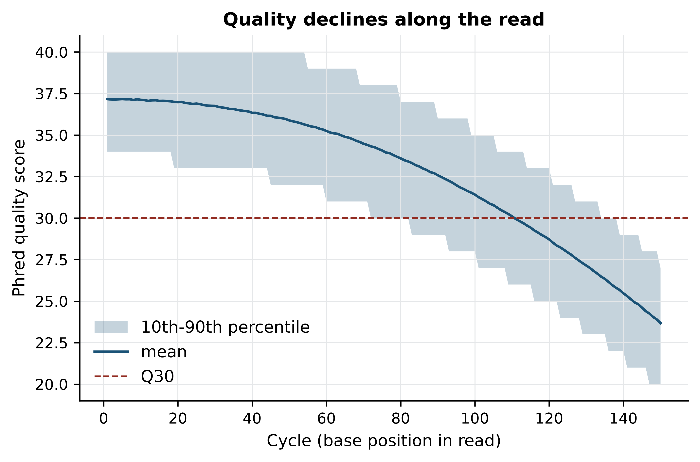
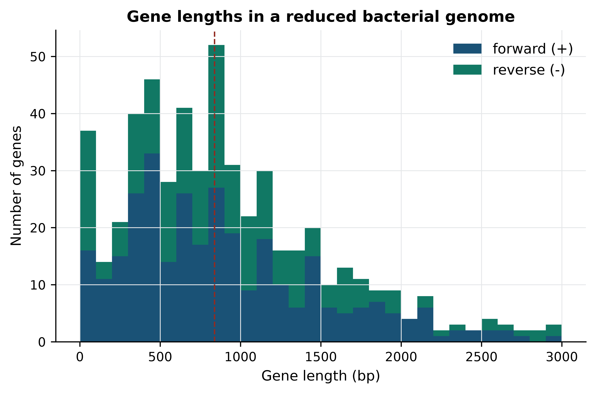
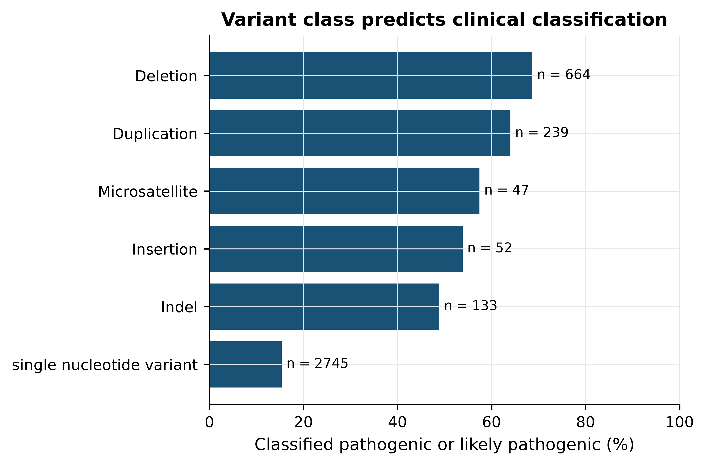

import sys; sys.path.insert(0, "..")
from pybfx import book_data, style
style()6 Python for bioinformatics
After working through this chapter you will be able to
- choose between the interpreter, a script and a notebook for a given piece of work
- manipulate sequence data with string and
Seqoperations, and explain why coordinates differ between Python and GFF3 - select the right collection — list, tuple, dictionary or set — for a biological question and justify the choice
- write a documented function with a default argument and defensive input checking
- parse FASTA and FASTQ files both by hand and with Biopython’s
SeqIO - vectorise a per-base quality calculation with NumPy and summarise a variant table with pandas
- package a chapter’s worth of functions into a tested, reusable module with a command-line interface
Python has become the language in which most new bioinformatics software is written, and the language most bioinformaticians reach for when no existing tool does what they need. The reason is not elegance but reach: the same language parses a FASTQ file, fits a model, queries NCBI, draws a figure and drives a pipeline, so an analysis need not be stitched together from four languages that disagree about what a missing value is.
This chapter teaches the language through biological data from the first line. There are no shopping lists and no foo variables. You will read the SARS-CoV-2 reference genome (data/sequences/sars-cov-2-NC_045512.2.fasta), translate the TP53 coding sequence from its GenBank record (data/sequences/TP53-NM_000546.6.gb), build a dictionary of p53 orthologues from data/proteins/p53-orthologs.fasta, compute per-base quality profiles from 20,000 simulated reads in data/reads/mgen_sim_R1.fastq.gz, tabulate the Mycoplasmoides genitalium annotation in data/annotation/mycoplasma-genitalium.gff, and summarise 3,888 ClinVar records over TP53 from data/variants/tp53_clinvar.vcf.
The chapter ends with something you can keep: a small module of tested functions with a command-line interface, assembled from the pieces built along the way. That progression — from an expression typed at a prompt, to a function, to a module another person can use — is the one that turns someone who can read Python into someone who can be trusted to write it.
6.1 Running Python
Python can be used in three ways, and choosing badly between them is a common source of lost work.
The interpreter is an interactive prompt: you type an expression, it answers. It is the right place to check what a function returns, inspect an unfamiliar object or test a one-line idea. Nothing is saved, which is precisely the point. Start it by typing python in a shell and leave it with exit().
A script is a text file of statements run from top to bottom by python analysis.py. It is the right form for anything that must be repeated or cited: a script is a record of what you did, in the sense discussed in the Unix chapter, and it is the only form that belongs in a pipeline.
A notebook interleaves code, output and prose in one document. It suits exploration and teaching, and it is how most people meet Python (Perez and Granger 2007). It also has a well-known hazard: cells can be run in any order, so a notebook that looks correct on screen may not run correctly from top to bottom, and the state it depends on may include a variable defined in a cell since deleted. Restart the kernel and run everything in order before you believe a result or send it to anyone — the version of record is the one that runs from a clean state (Sandve et al. 2013).
Whichever form you use, the packages must come from somewhere reproducible. Install Biopython, NumPy, pandas and the rest into a named environment with conda or mamba from the Bioconda and conda-forge channels (Grüning et al. 2018), and export that environment to a file alongside your code. A script that runs today and not next year is usually a script whose dependencies were never written down.
Every chapter of this book begins with the same setup, which makes the bundled data reachable and applies the book’s plotting style.
print(sys.version.split()[0])
#> 3.11.176.2 Sequence as text
A nucleotide sequence is a string, and almost everything you need to do to one is a string operation. Load the SARS-CoV-2 reference genome and look at it (Cock et al. 2009).
from Bio import SeqIO
record = SeqIO.read(book_data("sequences", "sars-cov-2-NC_045512.2.fasta"), "fasta")
genome = str(record.seq)
print(type(genome), len(genome))
#> <class 'str'> 29903
print(genome[:40])
#> ATTAAAGGTTTATACCTTCCCAGGTAACAAACCAACCAAClen gives the genome length, 29,903 bases. The square brackets are a slice: genome[:40] means “from the start up to but not including position 40”. Python indexes from zero and slices are half-open, so genome[0] is the first base and genome[0:3] is the first codon.
This is not a detail. GFF3, VCF, GenBank and every genome browser number the first base as 1 and include both ends of an interval. A feature reported in GFF3 as 686..1828 is genome[685:1828] in Python. Converting in your head each time is how off-by-one errors enter an analysis; converting once, in a named function, is how they stay out.
Two coordinate systems, one chance to confuse them
Python and BED use 0-based, half-open intervals. GFF3, VCF, GenBank and SAM use 1-based, closed intervals. A 100 bp feature is [1000, 1100) in the first system and 1001..1100 in the second, and both describe the same bases. Converting is subtraction of one from the start only — the end is unchanged — but the error is silent, shifts every downstream coordinate by one base, and typically surfaces as a frameshift in a translated sequence. Write the conversion once and test it.
Strings answer counting and searching questions directly:
gc_count = genome.count("G") + genome.count("C")
print(f"GC content: {100 * gc_count / len(genome):.2f}%")
#> GC content: 37.97%
print("ATG occurrences:", genome.count("ATG"))
#> ATG occurrences: 725
print("first ATG at index:", genome.find("ATG"))
#> first ATG at index: 106
print("ends with poly-A:", genome.endswith("AAAAAAAAAA"))
#> ends with poly-A: TrueThe f-string in the first print is the modern way to build text from values: anything inside {} is evaluated, and :.2f formats it to two decimal places.
Strings are immutable: no operation changes a string in place; every operation returns a new one. Attempting to assign to a position raises an error.
try:
genome[0] = "G"
except TypeError as error:
print("TypeError:", error)
#> TypeError: 'str' object does not support item assignmentThat restriction is protection, not inconvenience. If strings were mutable, a function that received your genome could modify it, and the caller would have no way of knowing. Immutability means genome is the same 29,903 bases after any function call as before it, which is why sequences, coordinates and sample identifiers are all best kept in immutable types.
Biopython’s Seq object behaves like a string but knows it is biological, which gives you the operations a string cannot provide.
spike_start, spike_end = 21563, 25384 # 1-based, closed, from the GenBank record
spike = record.seq[spike_start - 1:spike_end] # converted to Python's convention
print("spike CDS length:", len(spike), "bp")
#> spike CDS length: 3822 bp
print("first 30 bases:", spike[:30])
#> first 30 bases: ATGTTTGTTTTTCTTGTTTTATTGCCACTA
print("reverse complement:", spike.reverse_complement()[:30])
#> reverse complement: TTATGTGTAATGTAATTTGACTCCTTTGAG
protein = spike.translate(to_stop=True)
print(f"spike protein: {len(protein)} aa, starts {protein[:12]}")
#> spike protein: 1273 aa, starts MFVFLVLLPLVSThe spike glycoprotein comes out at 1,273 amino acids beginning MFVFLVLLPLVS, which matches the published protein — the check that tells you the coordinate conversion was right. Had the conversion been omitted, the slice would have started one base late, every codon would have been read out of frame, and translate would have stopped at the first chance stop codon a few residues in.
6.3 Collections
Four built-in collections cover nearly all biological data handling, and each has a situation it is clearly best for.
A list is an ordered, mutable sequence — the right choice for records read in order.
orthologs = list(SeqIO.parse(book_data("proteins", "p53-orthologs.fasta"), "fasta"))
print(len(orthologs), "records")
#> 8 records
print([len(rec) for rec in orthologs])
#> [393, 390, 391, 386, 386, 393, 373, 352]A dictionary maps keys to values, and looking a key up takes the same time whether the dictionary holds ten entries or ten million. An accession-to-sequence dictionary is the most common data structure in sequence analysis.
sequences = {rec.id.split("|")[1]: rec.seq for rec in orthologs}
print(list(sequences)[:4])
#> ['P04637', 'P02340', 'P10361', 'P41685']
print("human p53 length:", len(sequences["P04637"]))
#> human p53 length: 393
print("P99999 present:", "P99999" in sequences)
#> P99999 present: FalseThat is a dictionary comprehension: it builds the whole mapping in one expression. rec.id.split("|")[1] pulls the accession out of a UniProt header such as sp|P04637|P53_HUMAN.
A set is an unordered collection of unique items with fast membership testing, and set arithmetic answers “which are in both?” and “which are missing?” directly. The M. genitalium annotation lists 546 genes and 524 coding sequences; the difference is biologically meaningful, and sets find it.
import re
gene_ids, cds_parents = set(), set()
with open(book_data("annotation", "mycoplasma-genitalium.gff")) as handle:
for line in handle:
if line.startswith("#"):
continue
fields = line.rstrip("\n").split("\t")
if fields[2] == "gene":
gene_ids.add(re.search(r"ID=([^;]+)", fields[8]).group(1))
elif fields[2] == "CDS":
cds_parents.add(re.search(r"Parent=([^;]+)", fields[8]).group(1))
print(len(gene_ids), "genes;", len(cds_parents), "genes with a CDS")
#> 546 genes; 524 genes with a CDS
print(len(gene_ids - cds_parents), "genes with no coding sequence")
#> 42 genes with no coding sequenceThe 42 genes with no coding sequence are the structural RNA genes — 36 transfer RNAs, three ribosomal RNAs, and the RNase P, SRP and transfer-messenger RNAs. A set difference took one line and told you something about the organism.
A tuple is an immutable sequence, written with commas, and is the right container for a record whose fields have fixed meaning — a genomic interval, for instance, where (start, end, strand) should never be modified in place. Tuples can also be dictionary keys, which lists cannot, because dictionary keys must be immutable.
interval = (21562, 25384, "+")
start, end, strand = interval # unpacking
print(f"{end - start + 1} bp on the {strand} strand")
#> 3823 bp on the + strandFinally, collections.Counter is a dictionary specialised for counting, and it turns codon usage into two lines.
from collections import Counter
codons = Counter(str(spike[i:i + 3]) for i in range(0, len(spike) - 2, 3))
print("distinct codons:", len(codons))
#> distinct codons: 60
print(codons.most_common(5))
#> [('TTT', 59), ('AAT', 54), ('GTT', 48), ('GGT', 47), ('CAA', 46)]Sixty of the 64 possible codons appear, and the five commonest — TTT, AAT, GTT, GGT and CAA — are all AT-rich, which is what a genome of 38% GC produces: codon usage follows base composition before it follows anything else.
6.4 Control flow and functions
A for loop walks a collection, if chooses between branches, and a comprehension compresses the common case of “build a list by transforming another” into one expression. All three appear in the same short task — finding the orthologues shorter than human p53.
human_length = len(sequences["P04637"])
for ortholog in orthologs:
accession = ortholog.id.split("|")[1]
if len(ortholog) < human_length:
print(f"{accession}: {len(ortholog)} aa ({human_length - len(ortholog)} shorter)")
#> P02340: 390 aa (3 shorter)
#> P10361: 391 aa (2 shorter)
#> P41685: 386 aa (7 shorter)
#> P67939: 386 aa (7 shorter)
#> P79734: 373 aa (20 shorter)
#> P79820: 352 aa (41 shorter)lengths = [len(ortholog) for ortholog in orthologs]
short = [ortholog.id.split("|")[2] for ortholog in orthologs if len(ortholog) < 380]
print("mean length:", round(sum(lengths) / len(lengths), 1))
#> mean length: 383.0
print("shorter than 380 aa:", short)
#> shorter than 380 aa: ['P53_DANRE', 'P53_ORYLA']A comprehension reads as its English description: the name, for each orthologue, where the orthologue is short. Note also that the loop above deliberately does not reuse the name record, which already holds the genome: rebinding a name you still need is one of the easiest ways to produce a result that is wrong rather than an error that is obvious. Use one when the body is a single expression; use a loop when it is three statements and a condition, because a comprehension that needs a comment is a loop in disguise.
A function packages a computation under a name. A function you would trust has four properties: a name that says what it returns, a docstring that states what the arguments mean, sensible defaults, and a refusal to return a plausible answer when the input is wrong.
def gc_content(sequence, as_percentage=True):
"""Return the GC content of a nucleotide sequence.
Parameters
----------
sequence : str or Bio.Seq.Seq
Nucleotide sequence; case is ignored.
as_percentage : bool
Return a percentage (default) rather than a fraction.
Raises
------
ValueError
If the sequence is empty.
"""
text = str(sequence).upper()
if not text:
raise ValueError("cannot compute GC content of an empty sequence")
fraction = (text.count("G") + text.count("C")) / len(text)
return 100 * fraction if as_percentage else fractionprint(f"{gc_content(genome):.2f}%")
#> 37.97%
print(gc_content(spike, as_percentage=False))
#> 0.37310308738880166
try:
gc_content("")
except ValueError as error:
print("ValueError:", error)
#> ValueError: cannot compute GC content of an empty sequenceThe empty-sequence check is the part most often omitted and the part that matters most. Without it the function divides by zero and crashes with an error mentioning only ZeroDivisionError, hundreds of lines from the actual problem, which is that a FASTA record was blank. With it, the error says what is wrong in the vocabulary of the problem.
6.5 Files, context managers and FASTA
A file is opened with open inside a with statement. The with block is a context manager: it guarantees the file is closed when the block ends, including when an error is raised inside it. Code that opens files without with leaks file handles, and a loop over 5,000 samples will eventually fail with “too many open files”.
Parse FASTA by hand once, because the format’s two rules — a header line beginning >, followed by sequence lines until the next header — explain every bug you will ever meet in it.
def read_fasta(path):
"""Yield (header, sequence) pairs from a FASTA file."""
header, chunks = None, []
with open(path) as handle:
for line in handle:
line = line.rstrip("\n")
if line.startswith(">"):
if header is not None:
yield header, "".join(chunks)
header, chunks = line[1:], []
else:
chunks.append(line)
if header is not None:
yield header, "".join(chunks)
for header, sequence in read_fasta(book_data("proteins", "globins.fasta")):
print(f"{header.split()[0]:24s} {len(sequence):4d} aa")
#> sp|P69905|HBA_HUMAN 142 aa
#> sp|P68871|HBB_HUMAN 147 aa
#> sp|P02144|MYG_HUMAN 154 aa
#> sp|P02185|MYG_PHYMC 154 aaThree details in that function are the whole format. Sequence lines accumulate in a list and are joined at the end, because FASTA wraps sequences across lines and building a string with += in a loop is quadratic. The last record is emitted after the loop, because nothing follows it to trigger the flush — forgetting this silently drops the final sequence, a bug that survives testing on a two-record file. And yield makes this a generator: records are produced one at a time, so a 50 GB file never enters memory.
In practice, use Biopython, which handles the cases above plus line-ending variation, empty records and the format’s less common corners (Cock et al. 2009):
records = list(SeqIO.parse(book_data("proteins", "globins.fasta"), "fasta"))
print([(rec.id.split("|")[1], len(rec)) for rec in records])
#> [('P69905', 142), ('P68871', 147), ('P02144', 154), ('P02185', 154)]Compressed files need gzip.open with mode "rt" — read, text — and otherwise behave identically, which is how a FASTQ file of any size is read without decompressing it to disk.
import gzip
import itertools
with gzip.open(book_data("reads", "mgen_sim_R1.fastq.gz"), "rt") as handle:
first_reads = list(itertools.islice(SeqIO.parse(handle, "fastq"), 3))
for read in first_reads:
quality = read.letter_annotations["phred_quality"]
print(f"{read.id} {len(read)} bp mean Q {sum(quality) / len(quality):.1f}")
#> SIM:1:FC1:1:1:0:386803/1 150 bp mean Q 32.9
#> SIM:1:FC1:1:1:1:522982/1 150 bp mean Q 32.9
#> SIM:1:FC1:1:1:2:284660/1 150 bp mean Q 32.9itertools.islice takes the first three records from the generator without reading the rest of the file — the Python equivalent of piping into head.
6.6 Biopython’s core objects
Biopython’s design is worth understanding because every other sequence library copies it. A Seq is a biological sequence. A SeqRecord is a Seq plus an identifier, a description and a list of SeqFeature objects. SeqIO converts files into SeqRecord objects and back. Annotated formats such as GenBank carry features, and extracting one is the way to get a coding sequence without touching coordinates by hand.
tp53 = SeqIO.read(book_data("sequences", "TP53-NM_000546.6.gb"), "genbank")
print(tp53.id, len(tp53), "bp,", len(tp53.features), "features")
#> NM_000546.6 2512 bp, 70 features
cds = next(feature for feature in tp53.features if feature.type == "CDS")
print("CDS location:", cds.location)
#> CDS location: [142:1324](+)
print("protein_id:", cds.qualifiers["protein_id"][0])
#> protein_id: NP_000537.3coding = cds.extract(tp53.seq)
protein = coding.translate(to_stop=True)
print(f"CDS {len(coding)} bp -> protein {len(protein)} aa")
#> CDS 1182 bp -> protein 393 aa
print(protein[:40])
#> MEEPQSDPSVEPPLSQETFSDLWKLLPENNVLSPLPSQAM
print("matches UniProt P04637:", str(protein) == str(sequences["P04637"]))
#> matches UniProt P04637: Truefeature.extract applies the feature’s location — including strand and, for spliced features, every exon — so the translated product is correct without any arithmetic on your part. The final comparison is the kind of check worth building in: the translated transcript is identical to the canonical UniProt p53 sequence loaded earlier from a different file, so both the annotation and the parsing are right.
SeqIO.write goes the other way, and converting between formats is one line:
import io
buffer = io.StringIO()
SeqIO.write(orthologs[:2], buffer, "fasta")
#> 2
print(buffer.getvalue()[:180])
#> >sp|P04637|P53_HUMAN Cellular tumor antigen p53 OS=Homo sapiens OX=9606 GN=TP53 PE=1 SV=4
#> MEEPQSDPSVEPPLSQETFSDLWKLLPENNVLSPLPSQAMDDLMLSPDDIEQWFTEDPGP
#> DEAPRMPEAAPPVAPAPAAPTPAAPAPAPWriting to an in-memory buffer rather than a file keeps this chapter from leaving files behind; in a script the second argument would be a filename.
Fetching records from NCBI
Bio.Entrez wraps the NCBI E-utilities, which serve every record in GenBank, PubMed and the rest of the NCBI system (Sayers et al. 2021). Because this book must build without a network connection, the next block is not executed at build time; the output below it was captured from a real run.
import os
from Bio import Entrez
# NCBI asks for a contact address with every request; keep yours out of the
# script itself and read it from the environment.
Entrez.email = os.environ["NCBI_EMAIL"]
handle = Entrez.efetch(db="nucleotide", id="NC_045512.2", rettype="fasta", retmode="text")
fetched = SeqIO.read(handle, "fasta")
handle.close()
print(fetched.id, len(fetched))
print(fetched.description)
print(fetched.seq[:60])NC_045512.2 29903
NC_045512.2 Severe acute respiratory syndrome coronavirus 2 isolate Wuhan-Hu-1, complete genome
ATTAAAGGTTTATACCTTCCCAGGTAACAAACCAACCAACTTTCGATCTCTTGTAGATCTThe fetched sequence is identical to the bundled copy, which is the point of the comparison: a record downloaded today should match the accession you cited, and if it does not, the record has been updated and your analysis is describing a different sequence from the one in your methods section.
Public databases are a shared resource
E-utilities requests are rate-limited to three per second without an API key. Code that fetches 10,000 accessions in a loop without pausing will be blocked, and the block applies to your whole institution. Download in batches with Entrez.epost, cache what you fetch so a re-run does not repeat the request, and use the bulk FTP downloads for anything above a few thousand records.
6.7 NumPy where vectorisation matters
Python loops are slow, and for most bioinformatics work that does not matter. It starts to matter when the same arithmetic is applied to millions of numbers — per-base quality scores being the standard example. NumPy stores numbers in a typed, contiguous array and applies operations to the whole array at once, in compiled code (Harris et al. 2020).
import numpy as np
with gzip.open(book_data("reads", "mgen_sim_R1.fastq.gz"), "rt") as handle:
quality_rows = [read.letter_annotations["phred_quality"]
for read in SeqIO.parse(handle, "fastq")]
quality = np.array(quality_rows)
print("shape:", quality.shape, "dtype:", quality.dtype)
#> shape: (20000, 150) dtype: int64
print("mean Q overall:", quality.mean().round(2))
#> mean Q overall: 32.78The array has one row per read and one column per cycle: 20,000 × 150. axis=0 collapses rows, giving a value per cycle; axis=1 collapses columns, giving a value per read. That single idea — which axis to collapse — is most of what using NumPy requires.
per_cycle = quality.mean(axis=0)
per_read = quality.mean(axis=1)
print("first five cycles:", per_cycle[:5].round(2))
#> first five cycles: [37.16 37.14 37.14 37.15 37.16]
print("last five cycles:", per_cycle[-5:].round(2))
#> last five cycles: [24.4 24.25 24.05 23.9 23.68]
print("reads with mean Q < 25:", int((per_read < 25).sum()))
#> reads with mean Q < 25: 0A Phred quality of Q corresponds to an error probability of 10−Q/10, and that conversion is where vectorisation pays off: one expression converts three million scores.
error_probability = 10 ** (-quality / 10)
print("expected miscalled bases:", error_probability.sum().round(1))
#> expected miscalled bases: 3255.8
print("expected errors per read:", error_probability.sum(axis=1).mean().round(3))
#> expected errors per read: 0.163Figure 6.1 shows the per-cycle profile, which is the first figure to draw for any new sequencing run.
import matplotlib.pyplot as plt
cycles = np.arange(1, quality.shape[1] + 1)
low, high = np.percentile(quality, [10, 90], axis=0)
fig, ax = plt.subplots()
ax.fill_between(cycles, low, high, alpha=0.25, label="10th-90th percentile")
ax.plot(cycles, per_cycle, linewidth=1.5, label="mean")
ax.axhline(30, linestyle="--", linewidth=1, color="#922B21", label="Q30")
ax.set_xlabel("Cycle (base position in read)")
ax.set_ylabel("Phred quality score")
ax.set_title("Quality declines along the read")
ax.legend()
fig.tight_layout()
The mean falls from Q37.2 at the first cycle to Q23.7 at the last, crossing Q30 at cycle 111; the lower edge of the band crosses it much earlier, at cycle 83, so a tenth of reads are already below the conventional accuracy threshold a little over halfway through. This is the signature every Illumina run shows, caused by dephasing: within a cluster, molecules gradually fall out of step, so the signal becomes less clean with each cycle. Read it as a decision rather than a description — a profile like this one argues for trimming the last 40 bases, and a quality that collapses abruptly at a specific cycle points to a run problem rather than a library problem.
6.8 pandas for tabular genomic data
Most bioinformatics data is a table: features in a GFF3, variants in a VCF, counts in an expression matrix. pandas gives you a DataFrame — a table whose columns have names and types — and the operations that go with it (McKinney 2010).
A GFF3 file is tab-separated with nine fixed columns and # comments, which read_csv handles directly.
import pandas as pd
GFF_COLUMNS = ["seqid", "source", "type", "start", "end",
"score", "strand", "phase", "attributes"]
gff = pd.read_csv(book_data("annotation", "mycoplasma-genitalium.gff"),
sep="\t", comment="#", names=GFF_COLUMNS)
print(gff.shape)
#> (1175, 9)
print(gff["type"].value_counts().head(5))
#> type
#> gene 546
#> CDS 524
#> exon 42
#> tRNA 36
#> pseudogene 20
#> Name: count, dtype: int64This file was produced by NCBI’s prokaryotic genome annotation pipeline (Tatusova et al. 2016), which is worth knowing because the attribute keys you are about to extract — ID, Parent, locus_tag, product — are conventions of that pipeline rather than requirements of the GFF3 specification. Annotation from another source will use a different set, so inspect the ninth column before writing a regular expression against it.
Selecting rows uses a boolean mask — a column of True and False that pandas applies to the table — and new columns are assigned like dictionary keys.
genes = gff[gff["type"] == "gene"].copy()
genes["length"] = genes["end"] - genes["start"] + 1
genes["locus_tag"] = genes["attributes"].str.extract(r"locus_tag=([^;]+)")
genes["gene_id"] = genes["attributes"].str.extract(r"ID=([^;]+)")
print(genes[["locus_tag", "start", "end", "strand", "length"]].head(3).to_string(index=False))
#> locus_tag start end strand length
#> MG_RS00005 686 1828 + 1143
#> MG_RS00010 1828 2760 + 933
#> MG_RS00015 2845 4797 + 1953
print(genes.nlargest(3, "length")[["locus_tag", "length"]].to_string(index=False))
#> locus_tag length
#> MG_RS01280 5418
#> MG_RS02750 5352
#> MG_RS02355 4851.str.extract runs a regular expression down a whole column and keeps the first capture group, which is how the GFF3 attributes field is unpacked without a loop.
Split-apply-combine is the central idea of tabular analysis: split the rows into groups, apply a summary to each group, combine the results into a new table. In pandas it is groupby.
summary = genes.groupby("strand")["length"].agg(["count", "mean", "median", "max"])
print(summary.round(1))
#> count mean median max
#> strand
#> + 319 963.2 807.0 5418
#> - 227 1060.1 846.0 5352Genes on the two strands are similar in length — 963 bp on the forward strand against 1,060 bp on the reverse — and roughly 60% are on the forward strand, which reflects the bias towards co-orientation of genes with replication in small bacterial genomes.
Joining two tables on a shared key is merge. Gene features carry ID=gene-... and their coding sequences carry Parent=gene-..., so a left join attaches each gene’s product name to it.
cds = gff[gff["type"] == "CDS"].copy()
cds["parent"] = cds["attributes"].str.extract(r"Parent=([^;]+)")
cds["product"] = cds["attributes"].str.extract(r"product=([^;]+)")
annotated = genes.merge(cds[["parent", "product"]],
left_on="gene_id", right_on="parent", how="left")
print(annotated.shape[0], "rows;", int(annotated["product"].isna().sum()), "with no product")
#> 546 rows; 42 with no product
print(annotated.loc[annotated["product"].isna(), "length"].mean().round(1), "bp mean length, unannotated")
#> 195.3 bp mean length, unannotatedA left join keeps every gene whether or not it has a coding sequence, and the 42 rows with a missing product are the RNA genes found with sets earlier — mean length 195 bp, as expected for transfer RNAs. Always check the row count after a merge: if it exceeds the number of rows you started with, the key is not unique and every downstream count is inflated.
Figure 6.2 shows the length distribution behind those summary statistics.
fig, ax = plt.subplots()
bins = np.arange(0, 3100, 100)
ax.hist([genes.loc[genes["strand"] == "+", "length"],
genes.loc[genes["strand"] == "-", "length"]],
bins=bins, stacked=True, label=["forward (+)", "reverse (-)"])
#> (array([[16., 11., 15., 26., 33., 14., 26., 17., 27., 19., 9., 18., 10.,
#> 6., 15., 6., 5., 6., 7., 5., 4., 6., 1., 2., 2., 2.,
#> 2., 1., 0., 1.],
#> [37., 14., 21., 40., 46., 28., 41., 30., 52., 31., 22., 30., 16.,
#> 16., 20., 10., 13., 11., 9., 9., 4., 8., 2., 3., 2., 4.,
#> 3., 2., 2., 3.]]), array([ 0., 100., 200., 300., 400., 500., 600., 700., 800.,
#> 900., 1000., 1100., 1200., 1300., 1400., 1500., 1600., 1700.,
#> 1800., 1900., 2000., 2100., 2200., 2300., 2400., 2500., 2600.,
#> 2700., 2800., 2900., 3000.]), <a list of 2 BarContainer objects>)
ax.axvline(genes["length"].median(), linestyle="--", linewidth=1, color="#922B21")
ax.set_xlabel("Gene length (bp)")
ax.set_ylabel("Number of genes")
ax.set_title("Gene lengths in a reduced bacterial genome")
ax.legend()
fig.tight_layout()
The distribution is unimodal with a long right tail: the median gene is 838.5 bp, 372 of the 546 genes lie between 300 and 1,500 bp, and six exceed 4 kb. The shortest bars include the 42 structural RNA genes identified above, which average 195 bp. Neither strand shows a distinct distribution, which is the expected result and worth confirming before interpreting any strand-specific signal elsewhere in the analysis.
A variant table
The same operations work on a VCF once its INFO column is unpacked (Danecek et al. 2011). The bundled file holds every ClinVar record over TP53 (Landrum et al. 2017).
VCF_COLUMNS = ["chrom", "pos", "id", "ref", "alt", "qual", "filter", "info"]
variants = pd.read_csv(book_data("variants", "tp53_clinvar.vcf"), sep="\t",
comment="#", names=VCF_COLUMNS, dtype={"chrom": str})
for key in ["CLNSIG", "CLNVC", "CLNREVSTAT"]:
variants[key.lower()] = variants["info"].str.extract(rf"(?:^|;){key}=([^;]*)")
print(len(variants), "records;", int(variants["clnsig"].isna().sum()), "with no classification")
#> 3888 records; 99 with no classification
print(variants["clnsig"].value_counts().head(4))
#> clnsig
#> Uncertain_significance 956
#> Likely_benign 761
#> Pathogenic 743
#> Conflicting_classifications_of_pathogenicity 532
#> Name: count, dtype: int64variants["is_snv"] = (variants["ref"].str.len() == 1) & (variants["alt"].str.len() == 1)
pathogenic = variants["clnsig"].isin(["Pathogenic", "Pathogenic/Likely_pathogenic",
"Likely_pathogenic"])
rates = (variants.assign(pathogenic=pathogenic)
.groupby("clnvc")["pathogenic"].agg(["size", "sum", "mean"])
.sort_values("size", ascending=False))
print(rates.round(3))
#> size sum mean
#> clnvc
#> single_nucleotide_variant 2745 422 0.154
#> Deletion 664 456 0.687
#> Duplication 239 153 0.640
#> Indel 133 65 0.489
#> Insertion 52 28 0.538
#> Microsatellite 47 27 0.574
#> Inversion 8 1 0.125That table is the chapter’s most useful result, and Figure 6.3 makes it legible.
plotted = rates[rates["size"] >= 40].sort_values("mean")
fig, ax = plt.subplots()
bars = ax.barh(plotted.index.str.replace("_", " "), 100 * plotted["mean"])
for bar, n in zip(bars, plotted["size"]):
ax.text(bar.get_width() + 1, bar.get_y() + bar.get_height() / 2,
f"n = {n}", va="center", fontsize=8)
ax.set_xlabel("Classified pathogenic or likely pathogenic (%)")
ax.set_xlim(0, 100)
#> (0.0, 100.0)
ax.set_title("Variant class predicts clinical classification")
fig.tight_layout()
About one in six single-nucleotide variants is classified as pathogenic or likely pathogenic (15.4% of 2,745), against 68.7% of deletions and 64.0% of duplications. The explanation is mechanistic: most substitutions in TP53 are tolerated or of uncertain significance, whereas a deletion that shifts the reading frame destroys the DNA-binding domain. The interpretive warning is just as important — the denominators differ by an order of magnitude, and ClinVar records only variants somebody chose to submit, so these are proportions of a biased sample and not population frequencies.
6.9 Errors, tests and a command-line tool
Three things separate a script that works on your laptop from one a colleague can run: it fails clearly, it is tested, and it takes its inputs as arguments.
Python signals failure by raising an exception, which stops the program unless something catches it. Catch only what you can act on, and let the rest propagate — a bare except: that swallows every error turns a crash into a wrong answer.
def load_sequences(path):
"""Return {accession: sequence} from a FASTA file, with useful errors."""
try:
records = list(SeqIO.parse(path, "fasta"))
except FileNotFoundError:
raise FileNotFoundError(f"no such FASTA file: {path}") from None
if not records:
raise ValueError(f"{path} contains no FASTA records "
"(is it empty, or in another format?)")
return {record.id: str(record.seq) for record in records}
for candidate in [book_data("proteins", "globins.fasta"), "not_a_file.fasta"]:
try:
print(len(load_sequences(candidate)), "sequences from", candidate.split("/")[-1])
except (FileNotFoundError, ValueError) as error:
print(f"{type(error).__name__}: {error}")
#> 4 sequences from globins.fasta
#> FileNotFoundError: no such FASTA file: not_a_file.fastaThe two failure modes handled there are the two that actually happen: a path that does not exist, usually a typo or a missing download, and a file that exists but holds something else, usually a FASTQ or an HTML error page saved with a .fasta extension. Note what the function does not do — it does not return an empty dictionary and carry on. An empty result propagates: the next function sees no sequences, reports zero of something, and the pipeline completes successfully with a table of zeros. Raising an exception at the point where the assumption first fails is what keeps a wrong answer from being produced at all.
Testing is two lines, not a project
A test is an assertion about a known case. The argument against writing tests is always time; the argument for them is that you will change gc_content one day, and without a test you will not find out that you broke it until a figure looks odd three weeks later.
assert gc_content("GGCC") == 100.0
assert gc_content("ATAT") == 0.0
assert gc_content("GCAT", as_percentage=False) == 0.5
assert abs(gc_content(genome) - 37.97) < 0.01
print("all assertions passed")
#> all assertions passedChoose cases whose answer you know independently of the code: sequences that are all GC, no GC and half GC, plus one real value you have verified another way — here the genome-wide figure computed with grep and awk in the Unix chapter. When a function has a boundary (an empty sequence, a single base, a lower-case input), test the boundary, because that is where functions break. For a real project, move these into a tests/ directory and run them with pytest, which finds and runs every function whose name begins test_.
Taking arguments from the command line
argparse turns a script into a tool: it parses options, generates help text and rejects bad input before any work is done.
import argparse
def build_parser():
"""Return the command-line parser for the sequence summary tool."""
parser = argparse.ArgumentParser(
description="Summarise sequence length and GC content in a FASTA file.")
parser.add_argument("fasta", help="input FASTA file")
parser.add_argument("--min-length", type=int, default=0,
help="ignore sequences shorter than this (default: 0)")
parser.add_argument("--decimals", type=int, default=2,
help="decimal places for GC content (default: 2)")
return parserarguments = build_parser().parse_args(
[book_data("proteins", "p53-orthologs.fasta"), "--min-length", "380"])
for accession, sequence in load_sequences(arguments.fasta).items():
if len(sequence) >= arguments.min_length:
print(f"{accession.split('|')[1]}\t{len(sequence)}\t"
f"{gc_content(sequence):.{arguments.decimals}f}")
#> P04637 393 8.40
#> P02340 390 9.23
#> P10361 391 8.70
#> P41685 386 9.07
#> P67939 386 8.03
#> Q9TTA1 393 8.40Passing an explicit list to parse_args is how command-line code is tested; left to itself, parse_args() reads sys.argv, which is what happens when the script is run from a shell. Note that GC content of a protein sequence is meaningless — the function counts G and C as amino acids glycine and cysteine — which is exactly the kind of silent nonsense that type checking of inputs is for, and a good target for the exercises.
The module
Collect what the chapter built into one file, seqtools.py, in your project’s src/ directory. A module is a .py file whose functions other code can import: from seqtools import gc_content. Three conventions make it usable.
"""Sequence summary utilities for the practical bioinformatics project."""
from __future__ import annotations
__all__ = ["gc_content", "load_sequences", "summarise"]
# ... gc_content and load_sequences as defined earlier in this chapter ...
def summarise(path, min_length=0):
"""Return a list of (accession, length, gc) tuples for a FASTA file."""
return [(accession, len(sequence), gc_content(sequence))
for accession, sequence in load_sequences(path).items()
if len(sequence) >= min_length]
def main(argv=None):
arguments = build_parser().parse_args(argv)
for accession, length, gc in summarise(arguments.fasta, arguments.min_length):
print(f"{accession}\t{length}\t{gc:.{arguments.decimals}f}")
return 0
if __name__ == "__main__":
raise SystemExit(main())The module docstring says what the file is for. __all__ states which names are public, so a reader knows which functions are safe to depend on. And the if __name__ == "__main__" guard means the file can be both imported as a library and run as a program: when imported, the guard is false and only the definitions are executed, so importing summarise does not also print a table. Running it is then exactly what a Unix tool looks like:
python src/seqtools.py data/sequences/sars-cov-2-NC_045512.2.fasta
python src/seqtools.py --helpNC_045512.2 29903 37.97usage: seqtools.py [-h] [--min-length MIN_LENGTH] [--decimals DECIMALS] fasta
Summarise sequence length and GC content in a FASTA file.
positional arguments:
fasta input FASTA file
options:
-h, --help show this help message and exit
--min-length MIN_LENGTH
ignore sequences shorter than this (default: 0)
--decimals DECIMALS decimal places for GC content (default: 2)The help text was written by argparse from the parser definition, which is the practical argument for using it: the documentation cannot drift out of step with the options because it is generated from them.
Put the project on the path, not the path in the project
import seqtools only works if Python can find the file. Rather than scattering sys.path.insert calls through your code, run scripts from the project root and keep modules in one directory, or install the project in editable mode with pip install -e . once you have a pyproject.toml. The first approach is enough for a single analysis; the second is what you do when the code outlives the project.
6.10 Summary
- Use the interpreter to explore, a script for anything that must be repeated, and a notebook for a narrative — but restart and re-run a notebook in order before trusting it.
- Sequences are strings, and strings are immutable. That immutability is what stops a function quietly rewriting your data.
- Python coordinates are 0-based and half-open; GFF3, VCF and GenBank are 1-based and closed. Convert in one tested place, never in your head.
- Choose the collection by the question: a list for records in order, a dictionary for lookup by accession, a set for membership and difference, a tuple for a fixed record.
- A trustworthy function has a name that says what it returns, a docstring that defines its arguments, and an explicit error for input it cannot handle.
-
with open(...)closes files even when an error is raised;yieldturns a parser into a generator that streams a file of any size. - Biopython’s
SeqRecordplusfeature.extractremoves hand-arithmetic on coordinates — the most common source of silent error in sequence work. - NumPy earns its place when the same operation applies to millions of values; choosing an axis is most of what using it requires.
- pandas turns a GFF3 or VCF into a table, and split-apply-combine answers most questions you will ask of one. Check the row count after every merge.
- Two assertions are a test suite. A module with
__all__and a__main__guard is a tool.
6.11 Exercises
- Using string methods only, count how many times the stop codon TAA appears in the SARS-CoV-2 genome, and explain why this is not the number of genes ending in TAA.
- Write
reverse_complement(sequence)using a dictionary and a comprehension, without using Biopython, and verify it againstSeq.reverse_complementon the first 500 bases of the genome. - Build a dictionary mapping each p53 orthologue’s species suffix (the part after the underscore in
P53_HUMAN) to its sequence length, and print the species with the shortest protein. - The nucleocapsid (N) gene of SARS-CoV-2 occupies positions 28,274–29,533 in GenBank coordinates. Extract it, translate it, and report the protein length. What would the length have been had you forgotten the coordinate conversion?
- Using NumPy on the quality matrix, find the first cycle at which the mean quality drops below Q30, and report how many reads have a mean quality below Q30 overall.
- Using pandas, compute the total coding fraction of the M. genitalium genome: the sum of CDS feature lengths divided by the genome length of 580,076 bp.
- For the ClinVar table, produce a summary of clinical significance restricted to records reviewed by an expert panel (
CLNREVSTATcontainsreviewed_by_expert_panel). How does the distribution differ from the full file, and which is the more appropriate denominator for a statement about TP53 variation? - Extend
gc_contentto raise aValueErrorwhen the sequence contains characters outsideACGTN, then write the two assertions that demonstrate it both accepts valid input and rejects a protein sequence. - Rewrite
read_fastaso that it reports, on standard error, the line number of any sequence line that appears before the first header, rather than discarding it silently. Explain which real-world failure this catches. - Take the module skeleton in Section 6.9 and complete it as a working
seqtools.py, including the two functions from this chapter, your extendedgc_contentfrom exercise 8, and atests/test_seqtools.pywith at least four assertions. Run it from the command line on two bundled FASTA files.
6.12 Solutions
Solutions
1.
print(genome.count("TAA"))
#> 719str.count counts non-overlapping occurrences in all three reading frames and on one strand only. A stop codon is only a stop codon if it is in frame with a start codon, on the correct strand, and at the end of an open reading frame, so this count is an upper bound on nothing biological. Gene finding needs a tool that models reading frames.
2.
COMPLEMENT = {"A": "T", "C": "G", "G": "C", "T": "A", "N": "N"}
def reverse_complement(sequence):
"""Return the reverse complement of an upper-case DNA sequence."""
return "".join(COMPLEMENT[base] for base in reversed(sequence.upper()))
window = genome[:500]
print(reverse_complement(window) == str(record.seq[:500].reverse_complement()))
#> True3.
by_species = {rec.id.split("_")[-1]: len(rec) for rec in orthologs}
shortest = min(by_species, key=by_species.get)
print(by_species)
#> {'HUMAN': 393, 'MOUSE': 390, 'RAT': 391, 'FELCA': 386, 'BOVIN': 386, 'TUPBE': 393, 'DANRE': 373, 'ORYLA': 352}
print("shortest:", shortest, by_species[shortest], "aa")
#> shortest: ORYLA 352 aaMedaka (Oryzias latipes) has the shortest p53 at 352 residues, consistent with the lower conservation of the teleost N-terminal transactivation region.
4.
n_gene = record.seq[28274 - 1:29533]
n_protein = n_gene.translate(to_stop=True)
print(len(n_gene), "bp ->", len(n_protein), "aa")
#> 1260 bp -> 419 aa
wrong = record.seq[28274:29533].translate(to_stop=True)
print("without the conversion:", len(wrong), "aa")
#> without the conversion: 100 aaThe nucleocapsid protein is 419 residues. Omitting the conversion drops the first base and shifts the whole sequence out of frame, so the translation terminates at the first stop codon encountered by chance — after 100 residues — which is short enough to notice but long enough to look like a real truncated protein.
5.
below = np.argmax(per_cycle < 30)
print("first cycle below Q30:", int(below) + 1 if per_cycle.min() < 30 else "none")
#> first cycle below Q30: 111
print("reads with mean Q < 30:", int((per_read < 30).sum()), "of", len(per_read))
#> reads with mean Q < 30: 0 of 20000np.argmax on a boolean array returns the index of the first True, which is the idiomatic way to ask “where does this first happen?” — but it returns 0 when nothing is true, hence the guard.
6.
coding_bp = (cds["end"] - cds["start"] + 1).sum()
print(f"{coding_bp:,} bp coding, {100 * coding_bp / 580076:.1f}% of the genome")
#> 551,657 bp coding, 95.1% of the genome7.
expert = variants[variants["clnrevstat"].str.contains("reviewed_by_expert_panel", na=False)]
print(len(expert), "expert-reviewed records")
#> 191 expert-reviewed records
print(expert["clnsig"].value_counts().head(5))
#> clnsig
#> Likely_benign 53
#> Pathogenic 49
#> Uncertain_significance 35
#> Likely_pathogenic 28
#> Benign 26
#> Name: count, dtype: int64Only 191 of 3,888 records have been reviewed by an expert panel. Uncertain significance falls from 24.6% of the full file to 18.3% of this subset, and the subset is dominated by decided calls — 53 likely benign and 49 pathogenic. The difference is smaller than the word “expert” might suggest, which is itself the lesson: any statement of the form “x% of TP53 variants are pathogenic” must name its denominator, because the full file mixes single-submitter assertions with expert review and neither is a random sample of variation in the population.
8.
VALID_BASES = set("ACGTN")
def strict_gc_content(sequence, as_percentage=True):
"""GC content, refusing anything that is not a DNA sequence."""
text = str(sequence).upper()
if not text:
raise ValueError("cannot compute GC content of an empty sequence")
unexpected = set(text) - VALID_BASES
if unexpected:
raise ValueError(f"not a DNA sequence; unexpected characters: {sorted(unexpected)}")
return 100 * (text.count("G") + text.count("C")) / len(text)
assert strict_gc_content("GGCCATAT") == 50.0
try:
strict_gc_content(sequences["P04637"])
except ValueError as error:
print("ValueError:", str(error)[:60], "...")
#> ValueError: not a DNA sequence; unexpected characters: ['D', 'E', 'F', ' ...9. Track the line number with enumerate and write to sys.stderr when a sequence line arrives with no header in scope. The failure this catches is a truncated or concatenated download — a file whose first record header was lost, so that the first few hundred bases belong to a sequence with no identifier. Silently discarding them produces a FASTA file that is one record short, with no error anywhere.
def read_fasta_strict(path):
"""Yield (header, sequence) pairs, warning about orphaned sequence lines."""
header, chunks = None, []
with open(path) as handle:
for number, line in enumerate(handle, start=1):
line = line.rstrip("\n")
if line.startswith(">"):
if header is not None:
yield header, "".join(chunks)
header, chunks = line[1:], []
elif line and header is None:
print(f"line {number}: sequence before any header, ignored",
file=sys.stderr)
else:
chunks.append(line)
if header is not None:
yield header, "".join(chunks)
print(sum(1 for _ in read_fasta_strict(book_data("proteins", "p53-orthologs.fasta"))), "records")
#> 8 records10. The module is the one shown in Section 6.9 with gc_content replaced by strict_gc_content from exercise 8 and load_sequences from this chapter. A minimal test file:
from seqtools import gc_content, load_sequences, summarise
def test_gc_extremes():
assert gc_content("GGCC") == 100.0
assert gc_content("ATAT") == 0.0
def test_gc_rejects_protein():
import pytest
with pytest.raises(ValueError):
gc_content("MEEPQSDPSV")
def test_summarise_filters_by_length():
rows = summarise("data/proteins/p53-orthologs.fasta", min_length=390)
assert len(rows) == 4
assert all(length >= 390 for _, length, _ in rows)Running pytest tests/ on that file reports four passing assertions across three test functions. The third test is the valuable one: it checks behaviour against bundled data whose correct answer you worked out by hand earlier in the chapter, so it will fail if a future change to the filtering logic breaks it.
6.13 Further reading
-
Cock et al. (2009) is the Biopython reference; the project’s own tutorial is the best route into
SeqIO,SeqRecordandEntrez, and is kept current with the library. - McKinney (2010) is the original description of pandas by its author, and remains the clearest statement of why a labelled, typed table is a better structure for data analysis than an array.
- Harris et al. (2020) describes NumPy’s array model, and its section on broadcasting explains the rules that govern every operation combining arrays of different shapes.
- Hunter (2007) introduces Matplotlib; read it for the figure-axes model, which is what makes multi-panel figures manageable.
-
Sayers et al. (2021) documents the NCBI databases and E-utilities that
Bio.Entrezwraps, including the rate limits and the API-key mechanism. - Anders, Pyl, and Huber (2014) shows what a well-designed bioinformatics Python package looks like from the inside, and is worth reading as code as well as for its counting functions.
- Virtanen et al. (2020) covers SciPy, which you will need as soon as the analysis requires a statistical test rather than a summary statistic.
- Wilson et al. (2017) gives the project-level habits — one directory per project, raw data read-only, code under version control — that make the module built in Section 6.9 reusable rather than merely reused.